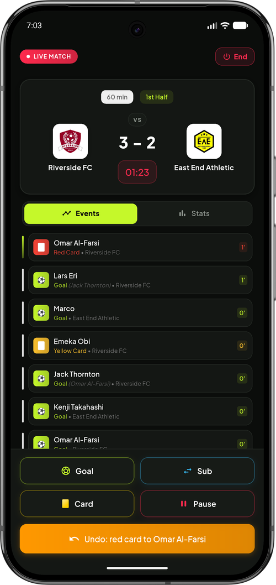

OBS Studio · Streamlabs · vMix
Free Live Football OBS Scoreboard Overlay.
Streaming local turf finals, academy games, or community tournaments on YouTube, Facebook, or Twitch? Control a broadcast-grade TV scoreboard overlay in real time straight from your phone.
1-Click Browser Source URL
Real-Time Timer & Goals
100% Free Forever

3-Step Broadcast Setup
How to Stream Matches with Turfy & OBS
No expensive hardware or desktop operator required.
01
Start Match on Phone
Launch Turfy on Android, pick your two teams, and start the live match clock pitch-side.
02
Copy Overlay Link
Tap the Broadcast button inside the match screen to copy your live scoreboard Browser Source URL.
03
Paste into OBS
Add a Browser Source in OBS Studio or Streamlabs. Every goal, half-time, and timer update syncs live!